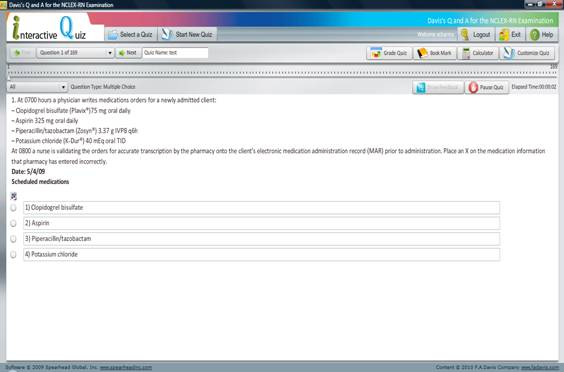
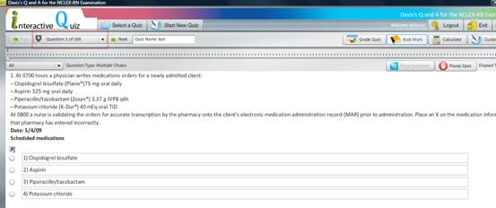
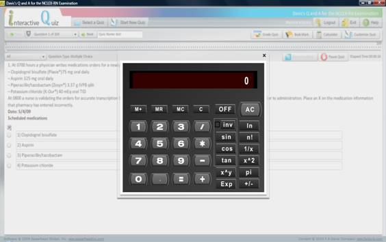
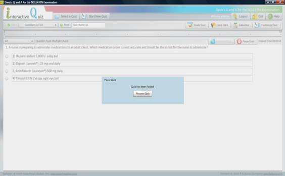

Quiz Page

Once you have started the quiz, you will be given access to several more options.
In the top-left hand corner will be options to navigate through the quiz. You can use the "Next" and "Prev" buttons to go through the quiz one question at a time. You can also use the drop-down list to jump to a particular question.
The quiz name appears next to the navigation buttons.
In the top-right hand corner are several buttons:
· Grade Quiz
· Bookmark
· Calculator
· Customize Quiz
Grade Quiz
Use this option to end the quiz and view grading information.
Bookmark
This will allow you to mark a question for further review and to easily return to it. Bookmarked questions will be marked with a "B" within the navigation.

Calculator
On clicking this button, a calculator will appear.

Customize Quiz
On clicking this button user will be directed to Start New Quiz page and allow you to change all of the aspects of the quiz.
Below the options noted is the Question Tracker. The Question Tracker provides a visual cue as to what area of the quiz the current question is in. It also allows you to quickly jump to another area of the quiz.
Beneath the Question Tracker are several more options that will allow you to filter questions, review question feedback, and pause the quiz.
A drop-down box will filter questions based on the following options:
· All
· Answered
· Unanswered
· Bookmarked
By default the "All" option is selected.
After you have attempted to answer the question, you can choose to review feedback information related to that question using the Show Feedback button. The button will be disabled until you attempt to answer the question.
You can also choose to Pause the Quiz should you need to. Doing so will stop the quiz timer and display a window allowing you to resume the quiz.
In addition to these options, the type of a question is displayed as well as the elapsed time.
The main area of the screen is dedicated to the question itself. Each quiz can have several different question types. The different question types will require you to answer the question differently from selecting the best answer choice, to placing items in the correct order, to entering a response within a field.
